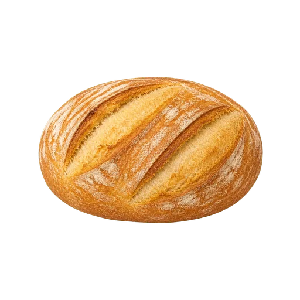
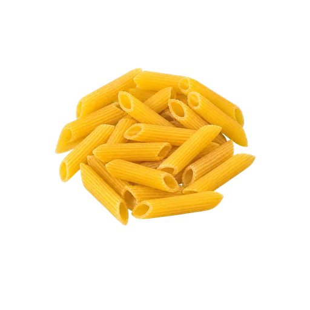
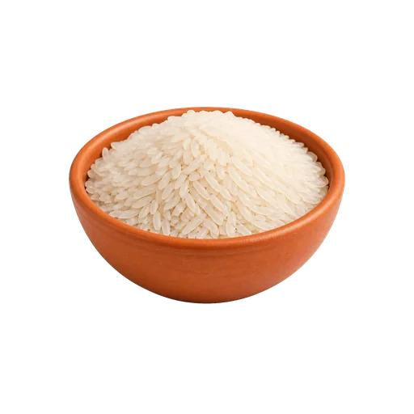
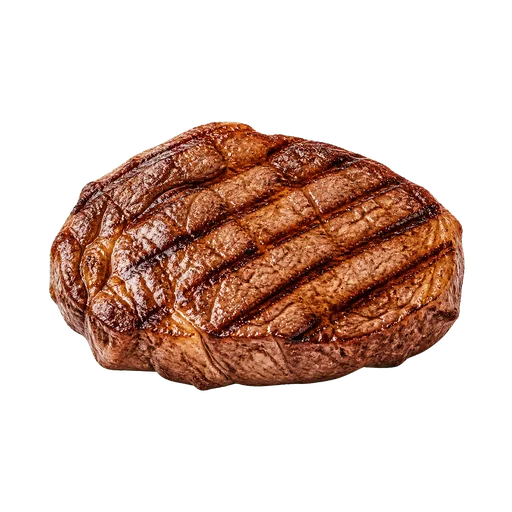
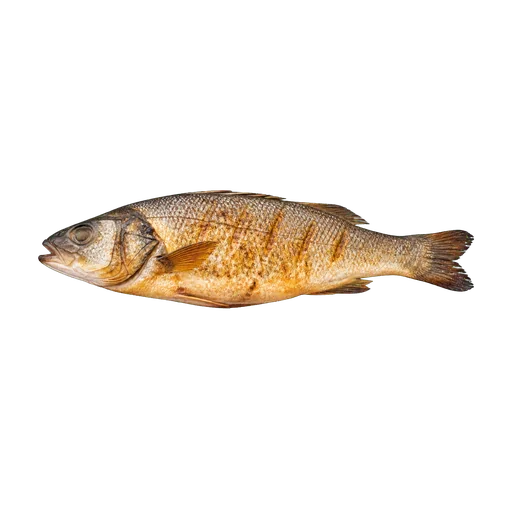
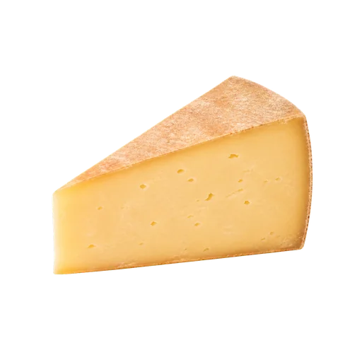
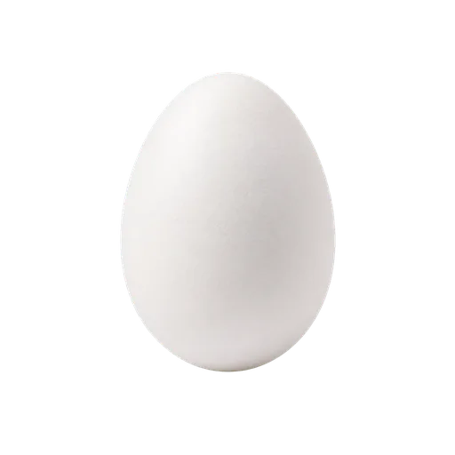
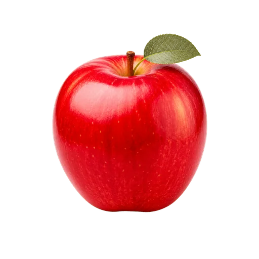

il pane
3つの例文
- Compro il pane fresco.
- Taglio una fetta di pane.
- Mangio il pane con il formaggio.
語彙 A1 ～ A2
食卓に座り、画像と3つのイタリア語例文でそれぞれの単語を学びましょう。









名詞は必ず冠詞と一緒に覚えましょう。そうすれば単語の性も覚えられます。
画像を使った8問
画像を見てイタリア語の単語を入力してください。冠詞を付けてもよく、記載された同義語も正解になります。
自由翻訳8文
自分の翻訳を書き、解答例と比べてみましょう。内容は端末に保存されますが、得点には影響しません。
自由に翻訳してくださいI buy fresh bread.
提案された解決策: Compro il pane fresco.
自由に翻訳してくださいThe pasta is al dente.
提案された解決策: La pasta è al dente.
自由に翻訳してくださいI eat rice with vegetables.
提案された解決策: Mangio il riso con le verdure.
自由に翻訳してくださいI cook the meat on the grill.
提案された解決策: Cucino la carne alla griglia.
自由に翻訳してくださいI cook the fish in the oven.
提案された解決策: Cucino il pesce al forno.
自由に翻訳してくださいThe cheese is in the refrigerator.
提案された解決策: Il formaggio è nel frigorifero.
自由に翻訳してくださいI eat an egg for breakfast.
提案された解決策: Mangio un uovo a colazione.
自由に翻訳してくださいThe apple is red.
提案された解決策: La mela è rossa.
Italiano con Martin
二人の先生、二つの視点。興味に合った学び方を選べます。